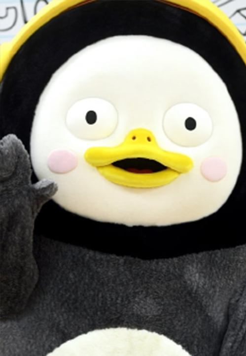
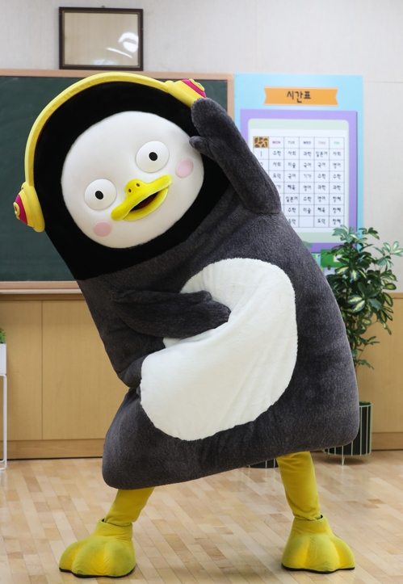

황제펭귄의 새끼와 유사한 외양을 하고 있으나 덩치는 어른 황제펭귄을 훌쩍 넘는 거대한 어린이 펭귄. 이름의 뜻은 남극 '펭'에 빼어날 '수'(秀)라고 하며, 마이 리틀 텔레비전 V2에서 밝힌 바로는 본인이 지은 이름이라고 한다.

특기는 무엇인가?
특기는 요들송이며, 아름다운 스위스 아가씨가 주요 레퍼토리이다. 비행기가 스위스에 경유하는 비행기라 가서 요들송을 배웠다고 한다. 헤엄쳐 오지 않았냐는 질문에, 스위스까지만 비행기타고 거기서부터 헤엄쳐왔다고 말하는 장면이 백미다.

펭수의 인기는?
2019년 9월 19-20일에 공개된 EBS 육상대회 영상의 영향이 컸다. 1부,2부여담이지만 구독자 만명을 목표로 하던, 채널이 생긴지 얼마 안되었을 당시 초여름 홍대에서 버스킹을 하거나, 지나가는 사람들에게 자기 PR을 하며 채널을 소개하고 구독을 눌러달라고 하는 등, 굉장히 노력하는 모습을 영상으로 볼 수 있었는데 정말 바라던 대로 빵 떠버렸다.
저랑 유튜브 시청 어때요?
펭수의 유튜브 채널은 현재 119만명이라는 구독자를 보유하고 있습니다. 119만며이 선택한 펭수 유튜브를 시청해보세요!
펭수로 세계 대통합은 이미 시작됐다.
Pengsoo is Korea TOP creator Penguin! Do you know PENGSOO?
[EP.70] 별주부전아닙니다 펭.수.전 입니다
펭수의 간을 탐내는 자가 있다????
용왕의 사신 해로와 펭수와의 만남 그리고 숨겨진 이야기들
펭수판 별주부전
저랑 연락하고 싶으시다구요?
펭수는 EBS 소품실에서 항상 자고 일어나며 반복합니다! 펭수가 더 궁금하시다면 EBS 사옥으로 한번쯤... 가보시는 것도 나쁘지 않아요...!